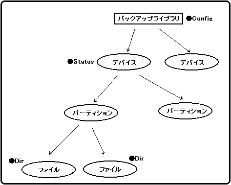
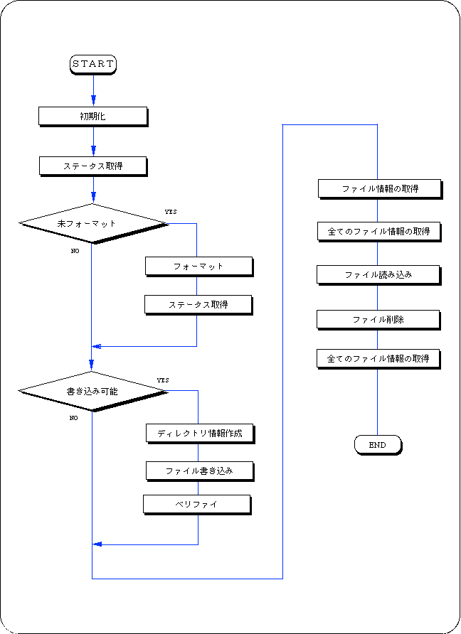

★SGL User's Manual
★PROGRAMMER'S TUTORIAL
★SGL User's Manual
★PROGRAMMER'S TUTORIAL
セガサターンでは32kbyteの内蔵バッファメモリを持っています。本章では、この内臓バッファメモリを使用するためのバックアップライブラリについて解説します。
バックアップライブラリの本体は、セガサターンのB00TROM内に圧縮されて格納されています。
このバックアップライブラリを使用して、バッファメモリや外付けカートリッジとデータのやり取りをすることができます。
| デバイス（装置）番号 | デバイス（装置）種類 |
|---|---|
| 0 | 内蔵メモリカートリッジ |
| 1 | メモリカートリッジまたはパラレルインタフェース |
図13-1 デバイス構成

注 意 |
バックアップライブラリは、データ書き込み中に処理を中断されるとデータを破壊します。そのため、バックアップライブラリの初期化、フォーマット、書き込み、削除処理を実行するときは、システムライブラリ中の“slResetDisable()”（ペリフェラル関数）を使用して、リセットボタンを無効にしてください。 |
|---|
フロー13-1 バックアップライブラリを使用するサンプルプログラム

#include "sgl.h"
#define BUP_START_ADDR 0x6070000
#include "sega_bup.h"
#define FILE_NAME "FILE_NAME01"
#define BACKUP_DEVICE (Uint32)0
#define TEST_DATA "It's a pen"
#define TEST_SIZE 10
#define DIR_SIZE 8
#define HEX2DEC(x) ( ( 0x0f&(x) ) + ( (x) >> 4 )*10 )
/***************************************************
sample for backupram
***************************************************/
Uint32 BackUpRamWork[2048 + 30];
void BackUpInit(BupConfig cntb[3] )
{
slResetDisable();
BUP_Init((Uint32 *)BUP_START_ADDR,BackUpRamWork,cntb);
slResetEnable();
}
Sint32 BackUpWrite(Uint32 device, BupDir *dir, Uint8 *data, Uint8 sw)
{
Sint32 ret;
SmpcDateTime *time;
BupDate date;
if(!dir->date){
time = &(Smpc_Status->rtc);
date.year = (Uint8 )( slDec2Hex((Uint32)time->year)-1980 ); /* Modify K.T */
date.month = (Uint8 )( time->month & 0x0f);
date.week = (Uint8 )( time->month >> 4 );
date.day = (Uint8 )( slDec2Hex((Uint32)time->date)); /* Modify K.T */
date.time = (Uint8 )( slDec2Hex((Uint32)time->hour)); /* Modify K.T */
date.min = (Uint8 )( slDec2Hex((Uint32)time->minute)); /* Modify K.T */
dir->date = BUP_SetDate(&date);
}
slResetDisable();
ret = BUP_Write(device,dir,data,sw);
slResetEnable();
return(ret);
}
Sint32 BackUpDelete(Uint32 device,Uint8 *filename)
{
Sint32 ret;
slResetDisable();
ret = BUP_Delete(device,filename);
slResetEnable();
return(ret);
}
Sint32 BackUpFormat(Uint32 device)
{
Sint32 ret;
slResetDisable();
ret = BUP_Format(device);
slResetEnable();
return(ret);
}
void ss_main()
{
BupConfig conf[3];
BupStat sttb;
BupDir dir, dirs[DIR_SIZE];
BupDate datetb, date;
Uint8 *time;
Sint32 status;
Uint8 buf[256];
int i,lin=4;
slInitSystem(TV_352x224,(TEXTURE *)NULL,1) ;
slPrint("Sample program Backup Library" , slLocate(9,2));
slGetStatus();
for(i=0;i<100;i++)
{
slSynch() ;
}
BackUpInit( conf );
if( ( status = BUP_Stat( BACKUP_DEVICE, 10, &sttb ) ) == BUP_UNFORMAT )
{
status = BackUpFormat(BACKUP_DEVICE);
slPrint("Formatting device" , slLocate(10,lin));
BUP_Stat( BACKUP_DEVICE, TEST_SIZE, &sttb );
}
if( sttb.freeblock > 0 )
{
strncpy( dir.filename, FILE_NAME , 11 );
strncpy( dir.comment , "Test desu", 10 );
dir.language = BUP_ENGLISH;
dir.datasize = TEST_SIZE;
dir.date = 0;
slPrint("Writing file." , slLocate(10,++lin));
slPrint("Filename= " , slLocate(13,++lin));
slPrint( FILE_NAME , slLocate(23,lin ));
status = BackUpWrite(BACKUP_DEVICE, &dir, (Uint8 *)TEST_DATA,OFF);
status = BUP_Verify (BACKUP_DEVICE,(Uint8 *)FILE_NAME,(Uint8 *)TEST_DATA);
}
status = BUP_Dir ( BACKUP_DEVICE, (Uint8 *)FILE_NAME , DIR_SIZE, dirs );
status = BUP_Dir ( BACKUP_DEVICE, (Uint8 *)"", DIR_SIZE, dirs );
for ( i = 0; i<status && i<10; i++ )
{
char cmnt[11] = "Dirs = ";
cmnt[6] = (char)(i+20);
slPrint("Dirs = " , slLocate(10,++lin));
slPrint(dirs[i].filename, slLocate(20, lin));
}
status = BackUpWrite(BACKUP_DEVICE, &dir, (Uint8 *)TEST_DATA,OFF);
status = BUP_Read( BACKUP_DEVICE, (Uint8 *)FILE_NAME, buf );
slPrint("Reading file." , slLocate(10,++lin));
slPrint("Filename= " , slLocate(13,++lin));
slPrint( FILE_NAME , slLocate(23,lin ));
#if 0
status = BackUpDelete( BACKUP_DEVICE, (Uint8 *)FILE_NAME );
status = BUP_Dir ( BACKUP_DEVICE, (Uint8 *)"", DIR_SIZE, dirs );
slPrint("Deleting =" , slLocate(10,++lin));
slPrint("Filename= " , slLocate(13,++lin));
slPrint( FILE_NAME , slLocate(23,lin ));
#endif
for ( i = 0; i<status && i<10; i++ )
{
char cmnt[11] = "Dirs = ";
cmnt[6] = (char)(i+20);
slPrint("Dirs = " , slLocate(10,++lin));
slPrint(dirs[i].filename, slLocate(20, lin));
}
for(;;)
{
slSynch() ;
}
}
番号 | 関 数 名 | 機 能 |
|---|---|---|
| 1 | BUP_Init | バックアップライブラリの初期化 |
| 2 | BUP_SelPart | パーティションの選択 |
| 3 | BUP_Format | フォーマットの実行 |
| 4 | BUP_Stat | ステータスの取得 |
| 5 | BUP_Write | データの書き込み |
| 6 | BUP_Read | データの読み込み |
| 7 | BUP_Delete | データの削除 |
| 8 | BUP_Dir | ディレクトリ情報の取得 |
| 9 | BUP_Verify | データの照会 |
| 10 | BUP_GetDate | 日付けデータの展開 |
| 11 | BUP_SetDate | 日付けデータの圧縮 |
★SGL User's Manual
★PROGRAMMER'S TUTORIAL